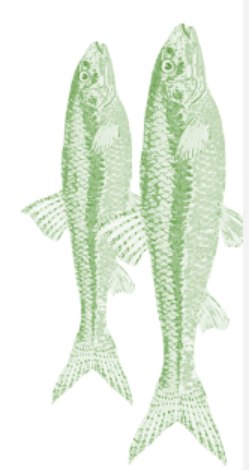

<!DOCTYPE html>
<html>
    <head>
        <meta charset="UTF-8">
        <title>Schmidts Katze.com</title>
    </head>
</html>
<body>
    <div class="container">
                    <div class="story-element--text--wrapper">
                        <h2 class="story-element--content-headline"style="font-size:30px;text-align:right;background-color:rgb(125,228,165);" >UNSERE AUFGABE</h2>
                        <div class="story-element--content-text">
                            <p style="font-size: 20px;text-align:right">
                                Wir haben die Mission, das<br>Leben von Haustieren positiv zu<br>verändern. Wir glauben, dass<br>
                                <strong>alle Haustiere das<br>bestmögliche Leben<br>verdienen</strong> - und dies beginnt<br>mit dem Essen. Wir möchten das
                                <br>Bedürfnis unserer Haustiere<br>nach echtem Futter befriedigen.<br>Wir bleiben bei dem, was<br>natürlich ist, und halten es
                                <br>einfach. Und so rein wie<br>möglich.Folgen wir dem Beispiel<br>der Natur und geben rohe<br>Nahrung die <strong>frei von
                                    <br>Füllstoffen, Nebenprodukten<br>und künstlichen<br>Konservierungsstoffen </strong>ist.Wir<br>möchten Tiernahrung neu  
                                </p>
                                <br > 
                        </div>
                    </div>
                    <h2 class="story-element--content-headline"style="font-size:30px;text-align:left;background-color:rgb(125,228,165)">UNSERE ZUTAEN</h2>
                    <p style="font-size: 20px;text-align:left">
                        Echtes frisches Fleisch, Kokosöl,<br>Apfelessig oder Kurkuma sind<br>nur einige der Zutaten, die wir<br>verwenden, um 
                        <strong> natürlich
                            
                            <br>gewonnene Nährstoffe </strong>und<br>Enzyme<br>bereitzustellen, die zum<br><strong>allgemeinen Wohlbefinden</strong> 
                        , zur<br><strong>lmmun- und</strong><br><strong>Verdauungsgesundheit,</strong>zu<br><strong>schlanken Muskeln </strong>und zu
                        <br><strong>gesunder Haut und<br>Gesundheit </strong>beitragen.
                        <br > 
                    </p>
    </div>
</body>